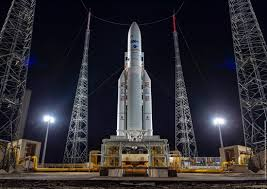
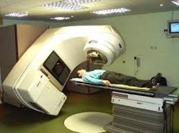

Circa 370 milioni di dollari
Il lancio inaugurale del razzo Ariane 5 dell'Agenzia Spaziale Europea fallì a causa di un bug nel software. Perdita di un razzo da 370 milioni di dollari e di carichi utili scientifici di alto valore.
Il lancio inaugurale del razzo Ariane 5 dell'Agenzia Spaziale Europea fallì a causa di un bug nel software. Perdita di un razzo da 370 milioni di dollari e di carichi utili scientifici di alto valore.

Circa 193 milioni di dollari
Questo errore si verificò a causa dell'uso di unità imperiali nel software del Mars Climate Orbiter. Perdita della sonda spaziale e della missione.
Questo errore si verificò a causa dell'uso di unità imperiali nel software del Mars Climate Orbiter. Perdita della sonda spaziale e della missione.

Circa 440 milioni di dollari in 45 minuti
Un aggiornamento del software difettoso causò milioni di operazioni errate, portando alla perdita di 440 milioni di dollari.
Un aggiornamento del software difettoso causò milioni di operazioni errate, portando alla perdita di 440 milioni di dollari.

Diverse vite umane
Therac-25 somministrava dosi letali di radiazioni a causa di bug nel software, causando almeno 5 morti.
Therac-25 somministrava dosi letali di radiazioni a causa di bug nel software, causando almeno 5 morti.

Perdita di vite e milioni di dollari
Un errore di arrotondamento nel software del Patriot Missile causò la morte di 28 soldati.
Un errore di arrotondamento nel software del Patriot Missile causò la morte di 28 soldati.

Circa 100 miliardi di dollari
Il "Millennium Bug" richiese enormi investimenti per evitare malfunzionamenti nei sistemi informatici.
Il "Millennium Bug" richiese enormi investimenti per evitare malfunzionamenti nei sistemi informatici.

Circa 475 milioni di dollari
Un bug nei processori Intel Pentium causò errori di calcolo, portando a enormi costi di sostituzione.
Un bug nei processori Intel Pentium causò errori di calcolo, portando a enormi costi di sostituzione.

Perdita di un'auto
Un aggiornamento del software del Tesla Model S causò il blocco dei freni, portando alla perdita di un'auto.
Un aggiornamento del software del Tesla Model S causò il blocco dei freni, portando alla perdita di un'auto.

Decine di milioni di dollari
Un aggiornamento software difettoso in AT&T portò a un blocco di 9 ore, causando disagi per milioni di utenti.
Un aggiornamento software difettoso in AT&T portò a un blocco di 9 ore, causando disagi per milioni di utenti.

Oltre 20 miliardi di dollari, molte vite perse
Il sistema MCAS del Boeing 737 Max causò incidenti mortali, portando a gravi perdite per Boeing.
Il sistema MCAS del Boeing 737 Max causò incidenti mortali, portando a gravi perdite per Boeing.